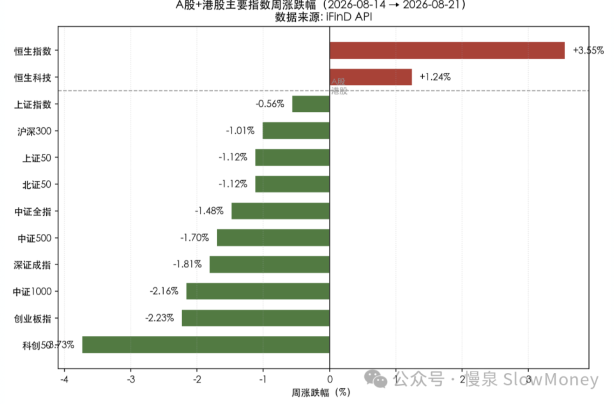
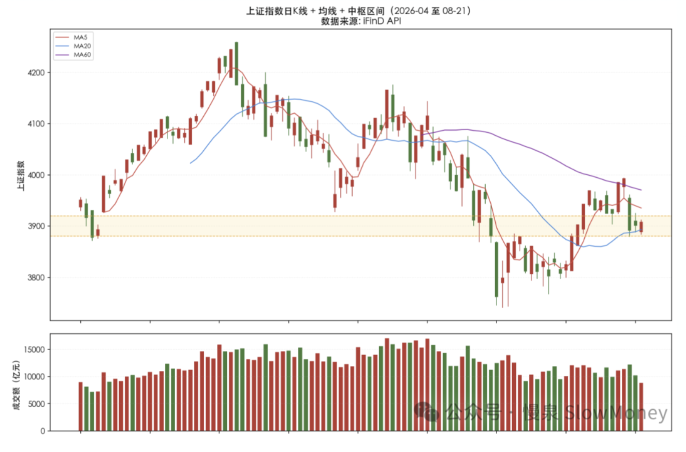

投资备忘20260823-你没信仰也没什么不好
2026-08-17 — 2026-08-23 · W34 · 周度备忘（补档）
这周市场确实是无聊的一周，冲高冲不上去，下跌也没突破，量缩得厉害。好玩的是生活不止只有股票，市场之外自己抽空报团去西藏转山。向导其中一位是藏族小姑娘，同伴中有个香港小哥，两人的对话很有意思。
到达经幡广场，小姑娘讲天葬和信仰，香港小哥说自己没有任何信仰。小姑娘很惊讶，估计心想"那你干嘛来了？"，但还是说："没有信仰也没什么不好。"作为听众的我本来想看看他们如何斗嘴，听她这么真心的一句安慰，好像自己确实少了点什么，也回答不了"为什么"。
接着她继续安慰："转山用心去感受、心要平静就行"。她掏出一张照片，说自己也有一张照片放到垭口——那是她去世不久的男朋友。
市场不平静，心怎么平静
- 市场的波动是绝对的，跟经幡一样、跟海一样，永远在骚动；
- 心随着市场波动，并形成当下的认知。心情好的时候，对标的和市场的认知是一个样，心情不好的时候，完全是另一个样——所谓的"小甜甜"和"牛夫人"的区别。心不平静的时候看到的不再是真实，是现实的投影；
- 内心平静看市场，就像跳出洞外看现实。不以物喜不以己悲，不一定是说不喜不悲，而是喜和悲不再依赖于物和己——不恐惧、不盲目。
所以逻辑就梳理清楚了：有信仰——内心的平静——看到真实——不以物喜不以己悲。
本周市场
市场是无聊的一周，典型指数沪深 300 下跌 1.01%，中证全指下跌 1.48%，恒生指数上涨 3.55%。A 股成交量继续缩量。
全周节奏为"周一大涨 → 周二滞涨 → 周三暴跌 → 周四五企稳"。周三的暴跌是本周唯一核心事件，全周 A 股因此由涨转跌。暴跌的导火索是隔夜美股科技股重挫（费城半导体跌近 5%）叠加 30 年期美债收益率突破 5.3%（2007 年以来新高），市场对 AI 领域债务融资与资本开支可持续性的担忧集中爆发，高位科技成长股（存储、光模块、算力、机器人）获利盘集体退潮。但随后两个交易日，黄金/资源/红利成为资金避风港，港股也逆势走强，市场并未演变为系统性恐慌。
结构上：价值全面跑赢成长、防御跑赢进攻。红利低波（+1.91%）是唯一大幅正收益因子，大盘价值（+0.86%）跑赢大盘成长（-1.38%）达 2.24 个百分点，300 价值跑赢 300 成长达 2.05 个百分点。成长因子中仅中盘成长（+0.71%）勉强翻红，大盘成长/300 成长垫底。这与周三科技成长杀跌、资金避险涌入红利/资源的结构完全一致。

市场展望
结合历史，当前市场的调整时间和力度都不够。历史上调整后基本分两种形态：后续的结构市，或者调整继续。所以，当前要么布局调整后上行的结构市资产，要么等待市场继续可能的下跌。
- 调整后结构市：2021 年调整 2 个月，缩量，后续结构市（市场热点不同）；2016 年调整 2 个月，缩量，后续结构市（市场热点不同）；
- 调整后下行：2015 年缩量 2 个月，缩量，继续下跌；2018 年调整 4 个月，缩量不明显，继续下跌；2022 年调整 3 个月，缩量不明显，继续下跌。
市场仍需要时间或新催化。当前市场的企稳的前提条件：第一种是震荡时间拉长或者更大的波动；第二种是新的事件带动的方向变化。这种情况下，控制仓位不上头、继续布局中庸资产、寻找下个成长资产。

组合备忘
Beta 组合表现跑赢市场（市场是指全 A 指数），Macro 同样。本周市场调整时组合微涨跑赢指数。组合仓位基本持平：Beta 策略仓位 76%，各类资产仓位持平；Macro 策略仓位 61%（其中转债 24%），继续保持谨慎。组合的表现主要受到以下因素影响：
- 风格有所改善：红利和 HALO 资产上涨，特别是港股资产本周明显超额收益；
- 机器人本周随着宇树科技上市后调整，对部分标的有所压制，但表现远超机器人整体表现。随着产业调整的时间拉长，正在接近资产的底部；
- 科技弹性资产本周表现一般：维持交易思路，大跌小买，大涨小卖。
| 类别 | 仓位 |
|---|---|
| Beta 策略（各类资产仓位持平） | 76% |
| Macro 策略权益仓位（含转债 24%，继续保持谨慎） | 61% |
Beta 跑赢市场 · Macro 同样 · 周度涨幅不再公开播报
操作和思考：本周操作较少，仅对受中报影响的资产进行了买卖的操作，继续等待新的信号，保持耐心。
下一步：思考未来的两种可能性——继续调整和结构市，这都与上一波市场热点可能有所区别。因此在仓位和布局结构上考虑两种可能性，仓位需要保守：Beta 仓位维持不高于 75%，开始考虑新的布局方向，并增加案头；Macro 仓位 65%，增仓聚焦在红利和 HALO 资产。
- 成长类资产：科技的第一轮弹性交易可能结束，关注应用、超跌科技资产；
- 机器人智驾：零部件受益，AI 下游应用最直接板块；
- 红利资产：维持核心持仓的前提下进行交易，向上的空间正在打开。筛选标准——股息率合适、营收稳定、海外占比；
- HALO 资产：聚焦持仓资产。
上期钩子的答案：① 三类失败杠铃与中庸资产——防守端本周起效：红利低波 +1.91% 为唯一大幅正收益因子、黄金/资源成避风港，中庸资产（红利、HALO）继续布局；② PPI 结构行情——数据未更新，但资金避险涌入资源/黄金与供给侧逻辑方向一致，延续观察；③ Macro 60→65 增仓——未执行：仓位 61% 基本持平，"仓位需要保守"优先，增仓继续等信号；④ 红利三标准——筛选标准（股息率合适、营收稳定、海外占比）延续，"向上的空间正在打开"。新钩子：① 调整形态二选一——结构市（2021/2016：缩量 2 个月后热点切换）还是继续下行（2015/2018/2022），当前缩量状态更像前者但时间不够；② 上证 3875-3925 中枢区间的方向选择与二次探底验证；③ 机器人"接近资产底部"的验证——宇树上市后调整拉长、零部件受益逻辑；④ 应用/超跌科技资产的关注落地。对账窗口：2026 年 9 月上旬。